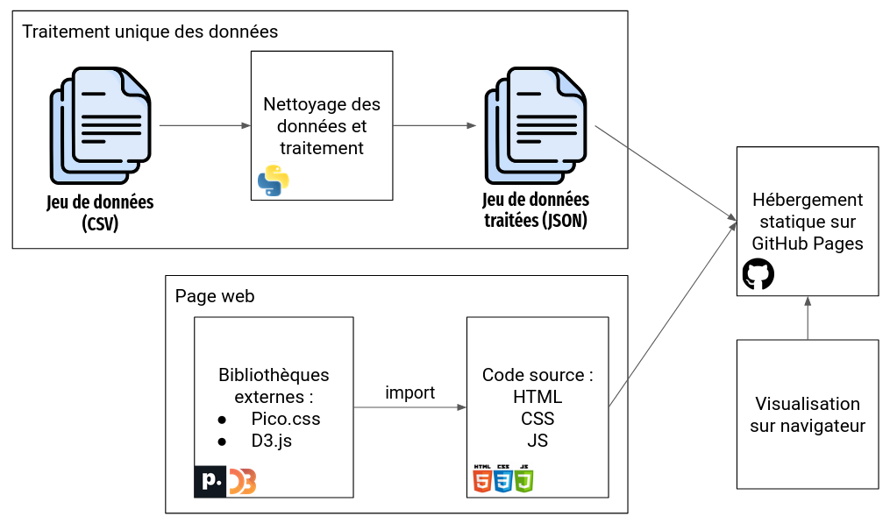
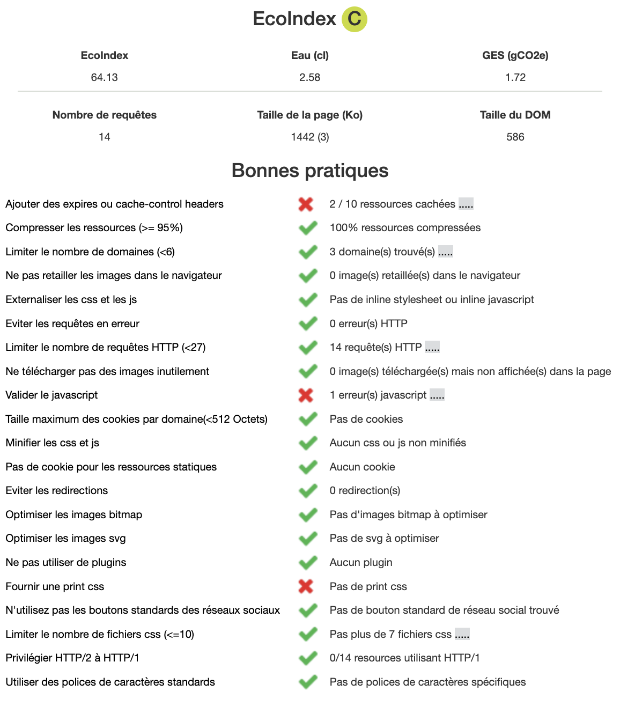

Membres de l'équipe
Gwendal Bolle - Antoine Klein - Loris Martinez - Tien Dat Phan - Viviane Qian
Présentation
Ce site présente des visualisations autour de l'usage du pétrole dans le monde. L'objectif est de mettre
en avant les différences entre les pays et les évolutions au cours du temps ainsi que l'importance du
pétrole dans le mix énergétique mondial. Cela permettra de montrer l'évolution de la consommation, de la
production et des réserves de pétrole au cours du temps et voir l'enjeu majeur qu'est le pétrole dans la
lutte contre le réchauffement climatique.
Source des données
Energy Institute met à disposition un classeur Excel qui recense les données énergétiques dans le monde.
Nous exploitons les feuilles “Oil: Proved reserves - Barrels (from 1980)”, et “Oil: Production -
Tonnes (from 1965)” et “Oil: Consumption - Tonnes (from 1965)” pour les données pétrolières. Nous
utilisons également les données de consommation des autres sources d'énergie pour faire ressortir la
part du pétrole dans le mix énergétique mondial et par pays. La source est disponible sur le lien
suivant :
https://www.energyinst.org/statistical-review/resources-and-data-downloads
Nous utilisons l'évolution de la population par pays 1860-2021 pour calculer les données par habitant
:
https://ourworldindata.org/grapher/population?time=1860..latest
Traitements opérés
Nos données étaient séparées en 5 fichiers CSV différents. Dans ces fichiers, il manquait parfois des
données pour certaines années, comme par exemple les réserves de pétrole où nous avons des données qu'à
partir de 1980. Afin d'avoir seulement les données qui nous intéressent pour nos visualisations, nous
avons décidé de faire un traitement en Python pour regrouper ces données intéressantes dans un seul
fichier json. Les données en json sont regroupées d'abord par année puis par code de pays, cela nous
permet de pouvoir facilement effectuer les calculs nécessaires aux graphiques relatifs à une certaine
année. Cela permet également de faciliter le mapping entre nos données et les graphes proposés par la
bibliothèque d3.js. Dans ce fichier JSON, nous retrouvons pour chaque année et chaque code pays : le nom
complet du pays, la production de pétrole en TWh, la consommation de pétrole en TWh, les réserves de
pétrole en barils, la part du pétrole dans le mix énergétique mondial (en pourcentage) ainsi que la
population du pays. Lors de l'exécution, ces données sont agregées en fonction de l'année et des pays
sélectionnés par l'utilisateur.
Architecture


Choix des technologies
Les données sont extraites et traitées une fois en Python puis stockées dans un fichier JSON de manière à
faciliter la
lecture et l'affichage.
La page web est écrite en HTML, CSS et JavaScript. On utilise également la bibliothèque minimaliste
https://picocss.com/ pour gagner du temps sur le style des éléments de notre interface et la
bibliothèque d3.js pour créer les
graphes.
En ce qui concerne le déploiement, nous avons choisi de le faire en deux étapes via un Github Actions :
Les graphes
Notre page comporte 4 graphes :
-
Carte choroplèthe du monde : ce graphe permet de visualiser la consommation, la production et les
réserves de
pétroles (au choix de l'utilisateur) pour chaque pays. Un dégradé de couleur permet de mettre en
avant les pays qui consomment/produisent/possèdent le plus de pétrole. La carte permet par ailleurs
de
sélectionner/déselectionner des pays pour se concentrer dessus dans les autres graphes. Cette
sélection est également possible via le menu déroulant Countries présent au-dessus de la
cart.
-
Courbe : on trouve, en dessous de la carte, une courbe qui permet de visualiser l'évolution de la
consommation, procuction, ou des réserves de pétrole au fil du temps. Ce graphe est le seul qui ne
dépend pas de l'année sélectionnée puisque son rôle est de montrer l'évolution au cours du temps,
afin
d'avoir une vue plus macroscopique. À noter qu'il faut bien faire attention aux échelles et aux
unités car on aurait tendance à penser, par exemple, que les réserves évoluent de la même manière
que la production lorsqu'on bascule d'un graphe à l'autre.
-
Mix : situé en bas à droite, ce graphe permet de visualiser la part du pétrole dans le mix
énergétique mondial ou des pays sélectionnés. C'est le seul graphe qui ne dépend pas de la catégorie
sélectionnée
(consommation, production, réserves). Les données de mix énergétique sont effet liées uniquement à
la consommation. Ce graphe permet de maintenir une vue sur la consommation de pétrole tout en
analysant la production par exemple. Ce graphe peut être analysé comme le pendant de la courbe
présentée plus haut. En effet, une baisse de la part du pétrole dans le mix énergétique mondial
n'implique pas forcément une baisse de la consommation de pétrole, mais plutôt une augmentation
globale de la consommation d'énergie.
-
Camembert : situé en haut à droite, ce dernier graphe permet de recenser les pays qui
consomment/produisent/possèdent le plus de pétrole en fonction de l'année sélectionnée. Il permet
d'avoir une vue plus fine que la carte qui ne fait pas de distinction claire entre les pays les plus
concernés.
Analyse GreenIT
L'analyse GreenIT est basée sur l'EcoIndex.
Cet indice permet de prendre conscience de l'impact écologique d'un site web au travers de métriques
définies sur le site d'EcoIndex :
-
La performance environnementale : représentée par un score sur 100 et une note de A à G. Une note
élevée est synonyme de bonne performance. Notre page web obtient une note de 63.71, ce qui
correspond à une note de C.
-
L'empreinte environnementale : elle comprend les émissions de gaz à effet de serre et la
consommation d'eau générées par la page. Notre page web génère 1.73 g de CO2 et consomme 2.59 cl
d'eau.
-
La complexité de la page : représenté par la taille du DOM (Document Object Model). Plus cette
taille est importante, plus la page est complexe à déchiffrer et à afficher. Le DOM de notre page
web comporte 586 éléments.
-
Le poids des données transférées : dans l'EcoIndex, ce poids correspond à la taille de la page
web puisque ce sont les données qui sont transférées du serveur vers le client. La taille de
notre page web est de 1635 Ko.
-
Le nombre de requêtes http : l'objectif est de limiter le nombre de requêtes http pour limiter
le nombre de connexions au serveur. Notre page web effectue 11 requêtes http trois seulement sont
liées à la bibliothèque d3.js. Le reste étant des requêtes vers des fichiers locaux. Une idée
d'amélioration serait de
regrouper les fichiers locaux en un seul fichier. Mais cela rendrait le code moins lisible.
Voici le rapport complet de l'analyse GreenIT de notre page web :

L'analyse des bonnes pratiques montre plusieurs points d'amélioration :
-
Ressources cachées : certaines ressources utilisées par notre page web ne comporte pas de gestion de
cache. Cela signifie que le comportement du navigateur vis-à-vis de ces ressources n'est pas
déterminé. Il est donc possible que le navigateur ne les mette pas en cache et donc qu'il les
recharge à chaque fois qu'elles sont utilisées. À noter que les deux ressources concernées sont
liées à la bibliothèque d3.js. Nous n'avons donc pas la main sur ces ressources. La seule option
pour
corriger cela serait d'utiliser une autre bibliothèque qui gère mieux le cache.
-
Validation du JavaScript : l'analyse montre une erreur dans le fichier map.js. Or, après validation
du code, nous ne constatons pas d'erreur. Une analyse plus détaillée nous aurait permis de
comprendre la source du problème. Mais sans information supplémentaire, nous ne pouvons pas corriger
ce point.
-
Minification des ressources : la minification consiste à supprimer les espaces, les commentaires et
à réduire la taille des noms de variables. Cela permet de réduire la taille des fichiers et donc de
réduire le temps de chargement de la page. L'analyse montre que 7 fichiers JavaScript et CSS n'ont
pas été minifiés. Parmi ces fichiers, 6 sont des fichiers locaux. Nous pouvons donc améliorer notre
empreinte grâce à cette action rapide.
-
Print CSS : les feuilles de style print permettent de définir le style de la page lorsqu'elle est en
mode impression. Cela permet de supprimer les éléments inutiles et de mettre en avant les éléments
importants. Notre page web ne comporte pas de feuille de style print. Cela n'a pas beaucoup d'impact
car notre page n'est pas destinée à être imprimée. Mais cela peut être une amélioration intéressante
si l'on souhaite améliorer notre empreinte.
Comme indiqué, seule la minification des ressources était réalisable en un temps raisonnable, et réellement
utile dans l'optique de réduire notre empreinte. Après minification, voici le rapport de l'analyse GreenIT :
